Profesionalno šišanje i nega pasa
Verujem da svaki pas zaslužuje da se prema njemu odnosi s ljubavlju, strpljenjem i pažnjom kao da je moj. Zato u salonu Molly svaki ljubimac dobija negu koja mu odgovara, da izađe nasmejan, uredan i opušten.
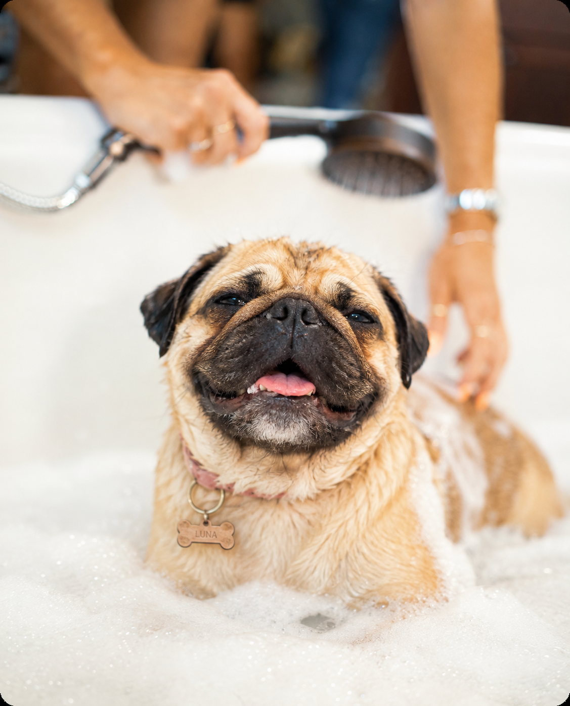
Pre tretmana
→
Posle tretmana
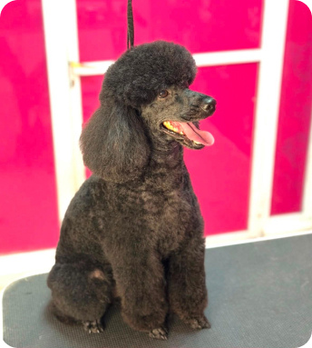
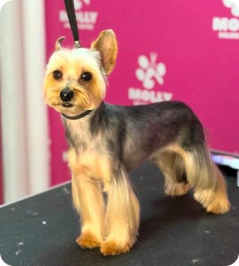
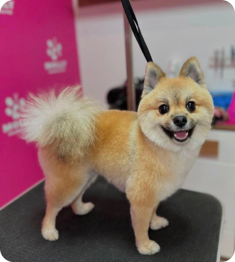
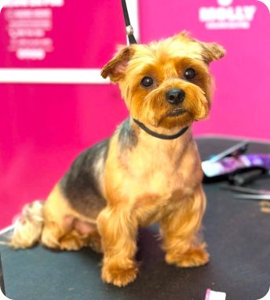
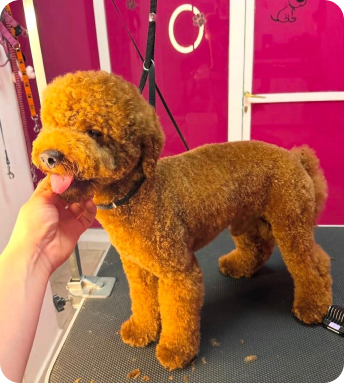
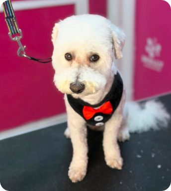
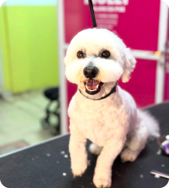
Profesionalna nega prilagođena
svakom ljubimcu
Nudim kompletnu negu za higijenu, zdravlje i lep izgled vašeg psa. Svaki tretman radim sa pažnjom, strpljenjem i ljubavlju, jer znam koliko vam je ljubimac važan.
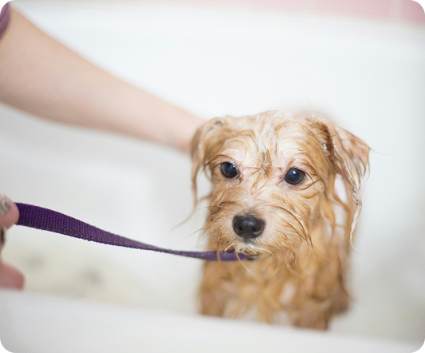
Kupanje pasa
Kupanje psa radim šamponima prilagođenim vrsti dlake i osetljivosti kože, tako da nega bude nežna ali temeljna. Ljubimac izlazi čist, mirisan i prijatno opušten, bez stresa i žurbe. Pratim kako se pas oseća tokom celog tretmana i prilagođavam tempo njemu, jer svaki pas je drugačiji i zaslužuje da mu bude prijatno.
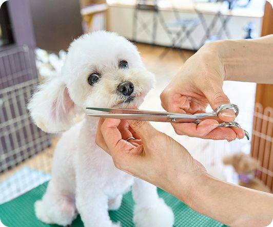
Šišanje pasa
Šišanje radim po rasnom standardu ili po želji vlasnika, u zavisnosti od toga šta vam više odgovara. Zajedno biramo frizuru koja najbolje odgovara tipu dlake i karakteru vašeg psa, jer nije svaki stil za svakog ljubimca. Kroz razgovor i savet dolazimo do rešenja koje mu paše i koje je lako održavati kod kuće. Rezultat je uvek uredan i negovan pas, doteran na način koji mu zaista odgovara.
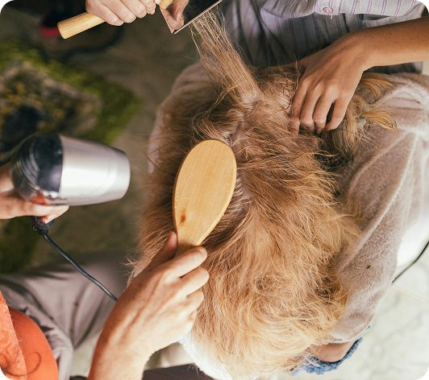
Furminiranje
Furminiranje je tretman koji pomaže da se ukloni podlaka i višak dlake koji inače završava po celoj kući. Poseban alat i tehnika omogućavaju da se dlaka temeljno očisti, a da koža i gornji sloj dlake ostanu netaknuti. Pas se oseća rasterećeno, a rezultat primetite već nakon prvog tretmana, manje dlakanja i sjajniju dlaku.
Kompletna
nega pasa
Kompletna nega objedinjuje sve što je vašem psu potrebno u jednoj poseti, kupanje, šišanje i furminiranje, prilagođeno njegovoj dlaci i potrebama. Umesto da tražite više termina, sve rešavamo odjednom, mirno i bez žurbe. Pas izlazi čist, uredan i rasterećen, a vi dobijate jednostavnost i sigurnost da je sve obavljeno na jednom mestu.
Zakaži termin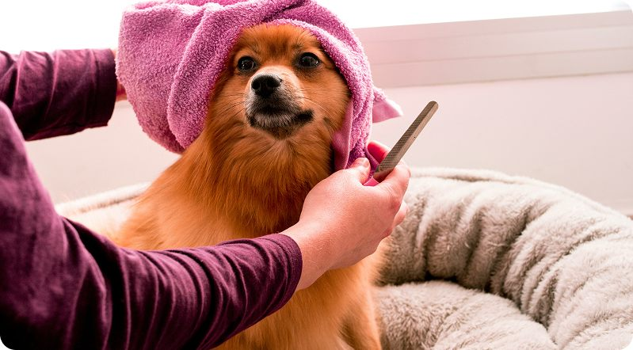
Kako izgleda nega vašeg ljubimca?
Kada dođete, pre svega se upoznamo, i sa vama i sa vašim psom. Volim da čujem kakav je po prirodi, da li je razigran i pun energije ili više smiren i oprezan, jer to mi puno govori o tome kako da mu pristupim. Svaki pas ima svoj tempo i svoje strahove, i meni je važno da se osećaju sigurno pre nego što krenemo sa bilo kojim tretmanom.
Kroz razgovor sa vama dogovorimo šta je psu zaista potrebno, kupanje, šišanje ili malo od svega, i tempom koji njemu odgovara. Radim mirno, sa strpljenjem, i pratim kako se pas oseća u svakom trenutku.
Na kraju, vaš ljubimac ne odlazi samo uredan i čist, već i opušten, kao da je bio u poseti kod nekog koga poznaje. To mi je i cilj, da svaki dolazak u salon bude lepo iskustvo, za psa i za vas.
Kontaktiraj nasŠta raditi nakon
šišanja?
Uz nekoliko jednostavnih navika kod kuće, možete produžiti efekat šišanja i učiniti da se vaš ljubimac oseća prijatno svaki dan.
Navikavanje psa na negu
Pozitivan odnos prema nezi gradi se vremenom. Pohvala, opuštenje i miran pristup pomažu da pas šišanje i održavanje doživi kao prijatno iskustvo.
Priprema psa pre šišanja
Pre dolaska u salon poželjno je da pas bude miran, da obavi šetnju i nuždu. Čista i raščešljana dlaka olakšava tretman i omogućava bolji rezultat.
Redovno četkanje dlake
Četkanje je jedan od najvažnijih koraka nakon šišanja. Pomaže u uklanjanju mrtve dlake, sprečava stvaranje čvorova i održava dlaku mekom i urednom.
Kupanje između tretmana
Nije potrebno kupati psa svakodnevno, jer to može isušiti kožu i dlaku. Dovoljno je kupanje po potrebi, kada je pas prljav.
Održavanje higijene između tretmana
Redovno brisanje šapa, održavanje čistoće dlake i povremena nega kod kuće pomažu da pas duže ostane čist i svež između dolazaka u salon.
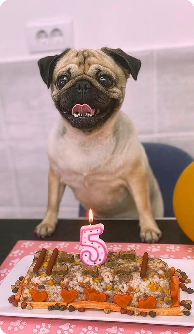
Sve je počelo sa Molly
Ljubav prema šišanju pasa se kod mene rodila kroz Molly, dok sam učila da negujem njenu dlaku i brinem o njoj. Iz te brige je nastala prava strast prema šišanju, kupanju i druženju sa psima, i tako je salon dobio ime po njoj.
Sve je počelo od kuće, iz želje da svom psu pružim najbolju negu. Vremenom se ta ljubav proširila i na druge ljubimce, i danas imam mali salon u centru Požarevca, gde su svi psi dobrodošli.
Svakom psu prilazim sa istom pažnjom koju sam nekad poklanjala Molly, uzimajući u obzir njegovu rasu, tip dlake i karakter. Volim da svaki tretman bude prijatno iskustvo, i za psa i za vlasnika, jer to je ono što mene i danas najviše ispunjava u ovom poslu.
Često postavljana pitanja
Pripremili smo odgovore na najčešća pitanja kako bismo vam olakšali pripremu i učinili prvi dolazak što prijatnijim za vas i vašeg ljubimca.
Zavisi od rase, veličine i stanja dlake, ali u proseku tretman traje između jedan i dva sata. Uvek radim bez žurbe, jer je pas važnije da se oseća opušteno nego da sve bude gotovo brzo.
Za većinu pasa preporuka je jednom u mesec do dva, ali to zavisi od tipa dlake i rase. Kod prvog dolaska rado dam savet koji ritam najviše odgovara vašem ljubimcu.
Da, svakom psu prilazim strpljivo i prilagođavam tempo njegovom raspoloženju. Ako je potrebno, tretman radim u više pauza, kako bi se pas osećao sigurno tokom cele posete.
Nema razloga za brigu, prvi put uvek prilazim polako, dajem psu vremena da se navikne na prostor i na mene, i tako gradimo poverenje od prve posete.
Cena zavisi od veličine i rase psa, kao i od urednosti dlake, koliko je zapuštena i kada je pas poslednji put bio na šišanju. Za tačnu cenu najbolje je da se javite ili dovedete psa, pa dogovorimo sve na licu mesta.